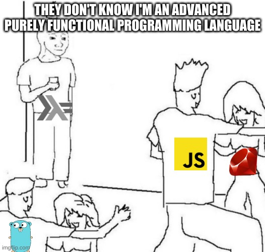
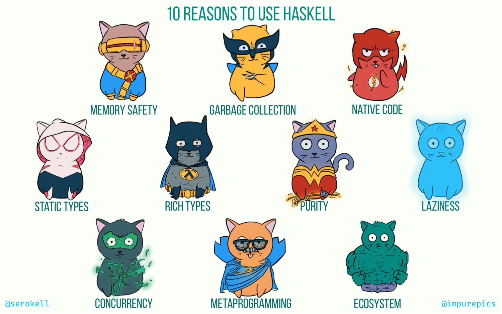

Benefits of Learning Haskell
Benefits of Learning Haskell
As developers, there is so much we can learn to improve our skills, ranging from deep theory, to small practical tidbits of information. It can be overwhelming at times and we are forced to pick what we want to learn deeply and what we just want to gloss over. You can’t learn it all!
My belief is that in terms of long term improvement, learning Haskell is one of the best ways to up your raw programming ability.
Why Learn New Language
Learning a new programming language is a great way to improve as a programmer. Each language has its own unique take on things and will have some great ideas.
Usually these new learnings are not strictly tied to the new language. You can take them and use them in many different programming languages.
Ok but Why Learn Haskell
When learning a new programming language for improvement, it is usually best to choose some language that is very different from your known programming languages. For example, if you know Ruby you probably wouldn’t get a huge amount out of learning Python, as they are quite similar.
Haskell is very different from mainstream popular programming languages. Most developers work in these mainstream languages and so Haskell has a lot to teach them.
How is it different?
Functional Programming

Haskell is a purely functional programming (FP) language. What is FP? I see it as programming enhanced by ideas and constructs from math.
- Haskell uses FP from the ground up. The whole ecosystem builds on these concepts, so you can’t avoid them.
- It is pure. It does not have unconstrained side effects, so you need to learn the FP way of handling them.
- Similarly, it is immutable, so you must learn how FP manages this.
- It’s implementation closely mirrors the math behind FP, so you are learning something close to the real underlying concepts.
Haskell actually inspired a lot of the FP implementations in more popular languages. Knowing FP in Haskell will make these (typically simpler) implementations easy to understand.
Static Type Checking
Haskell builds on type theory and has an advanced type system. This includes ‘type-level’ programming, or code that is run by the compiler at compile time, not at run time.
Like how many mainstream languages are getting FP features, they are also getting (more sophisticated) type checkers. Again, if you learn Haskell, these (likely simpler) type systems should be easy to use.
For example, Kotlin has sealed classes which support matching. It can be hard to see how these might be useful and I imagine many OO background developers would ignore them.
However, these a really just a form of sum types and pattern matching, which are incredibly useful. You can learn the clean implementation in Haskell then apply this knowledge in other languages.
You Can Use Haskell in Prod
There are even fancier languages than Haskell. Not more advanced in all ways, but that take a specific idea and go much further than Haskell. However, you can’t easily use these languages in prod. Either because they are too immature, or they aren’t really designed for it.
Haskell on the other hand is a sweet spot where it is highly advanced, but you can (and many companies do) use it in prod.
This means:
- You can learn Haskell by building real things.
- One day you might be able to just use Haskell directly in prod, not do FP in OO languages. 😉
10 Reasons to Use Haskell

Memory safety. Manual memory management in C and C++ often leads to buffer overflows, use-after-free, memory leaks, and other memory-related bugs. This results in security vulnerabilities. Software written in Haskell is unlikely to exhibit such issues thanks to automatic memory management. Memory safety is a common trait among modern languages, including Java, Python, Go, JavaScript, Rust, and others, and it is absolutely essential for writing secure software.
Garbage collection. Garbage collection is less limiting than lifetime checking, thus facilitating better abstractions and higher developer productivity.
Native code. This makes Haskell a great choice for applications that require good performance, such as high-throughput data processing.
Static types. This means that many bugs are caught early in the development cycle before the product reaches the users or even the quality assurance department. Furthermore, the developer can study the data model encoded in types to better understand the business domain.
Rich types. Unlike Java or Go, where static types often come off as a nuisance, the type system of Haskell is powerful enough to become a convenience. With support for algebraic data types, parametric polymorphism, class-based (ad-hoc) polymorphism, type families, type equalities, existential quantification, higher-rank polymorphism, kind polymorphism, runtime type inspection, Haskell offers an extremely versatile toolset for writing statically typed programs.
Purity. Haskell’s design is centered around pure functions and immutable data. Over and over, these features have proven essential for writing correct software. Managing global state, mutable data, and side effects is error-prone, and Haskell gives the programmer all the tools to avoid or minimize these sources of complexity.
Laziness. From the very start, Haskell was conceived as a lazy language, and to this day lazy evaluation remains its landmark feature. The idea is to defer computation until the results are needed, and the consequences are ease of refactoring, the ability to define custom control structures, and improved composability.
Concurrency. In many languages, concurrency is a never-ending source of issues, but in Haskell it is fairly straightforward. Green threads, amazing libraries such as async and stm, and ubiquity of pure functions make writing concurrent applications in Haskell a pleasure instead of a headache.
Metaprogramming. Haskell supports the inspection and generation of the program’s abstract syntax tree. This feature is called Template Haskell, and it’s used for compile-time evaluation and to automate boilerplate generation.
Ecosystem. Hackage is a centralized repository of open-source Haskell software, featuring over 15000 packages. Stackage is a curated collection of package versions that guarantees compatibility between libraries, featuring over 2500 well-maintained packages. It is not uncommon to find out that the problem you’re solving has already been solved and shipped as an open-source library.
Learning Haskell
Haskell is awesome, but it is a niche language. You can expect some challenge in getting things set up and of course learning the language. Some describe it as learning to program again from scratch.
The key to making the journey manageable is to find some community to support you. The FP slack and Haskell :: Reddit are both excellent choices.
- Yorgey’s cis194 course
- Functional Programming course
- Supplementary course, cs240h Spring 14
- Supplementary course, cs240h Winter 16
Above all, I think learning Haskell should be fun. Try and enjoy the ride. 😊